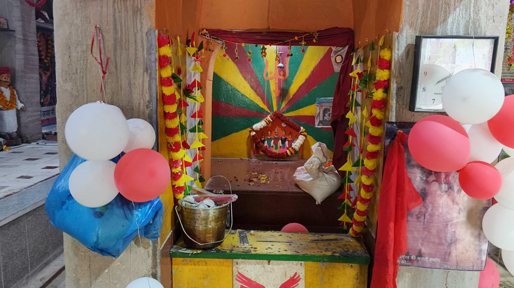
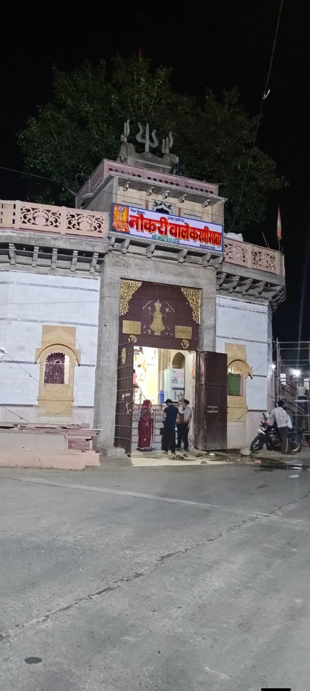
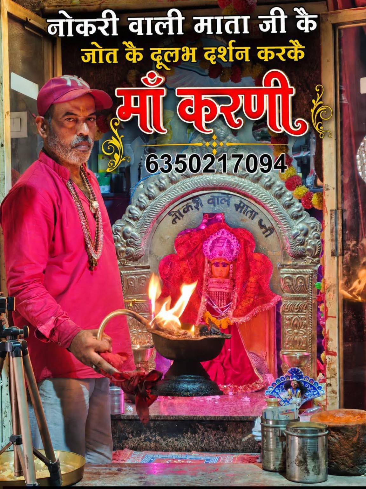

नौकरी वाली करणी माता धाम
जय माँ करणी - मनोकामना पूर्ण करने वाली


श्री खटूंदरा राय धाम में विराजित नौकरी वाली करणी माता भक्तों की मनोकामनाएं पूरी करने के लिए प्रसिद्ध हैं। यहाँ दूर-दूर से श्रद्धालु अपनी सरकारी व निजी नौकरी, करियर और जीवन की तरक्की की अर्जी लगाने आते हैं।
माँ करणी की कृपा से अनगिनत युवाओं को रोजगार और सफलता की प्राप्ति हुई है। मंदिर प्रांगण में नियमित रूप से पूजा, जोत एवं आरती का आयोजन किया जाता है।
पूजा, आरती एवं दर्शन जानकारी हेतु संपर्क करें
6350217094अपनी मनोकामना यहाँ दर्ज करें: